Five plants: observed geometry and correspondence review
7 October 2026 · first-stage research evidence. All five specimens are recognisable; 12 organ identities have strong source-image support. Interior point pools and endpoint candidates retain original fused indices. No biological heights or validated manual-trait error scores are released.
Physical ChArUco dimensions and recording units are unavailable. Every metric number is conditional on the existing reconstruction scale. No ruler value changed cameras, points, masks or scale.
Observed point selections
Switch views to inspect selected canopy geometry. This display samples existing vertices. Colours identify P1–P5; missing and uncertain tissue remains outside this display.
Provisional source-endpoint chords
One operator-only comparison and two partial observed extents are available. These are straight distances between original points, not validated accuracy results. The endpoint-disk range shows sensitivity to the independently reviewed source region; it is not a confidence interval.
P5.O04.terminal_lamina_chord Visible terminal lamina portion only; basal lobes/petiole-side origin are not included.
12.149
10.71–13.76
12.9 cm photo_supported_approximate
Not homologous / not computed
P3.O03: the nominal 7.475 cm chord is close to the operator annotation 7.5 cm, but the endpoint-disk range is 6.71–8.42 cm, the basal convention is tentative, and scale is unconfirmed. This cannot be reported as a validated accuracy percentage.
P1.O03.observed_blade_extent — endpoint evidence
No homologous whole-organ comparison: Magnified source review shows the thin dry terminal tip extends beyond this reconstructed endpoint. This is partial observed extent, not whole-leaf length, so no reference residual is computed.
Magnified source review shows the thin dry terminal tip extends beyond this reconstructed endpoint. This is partial observed extent, not whole-leaf length, so no reference residual is computed.
Frame 459309; exact selected original fused points projected with final ICP pose.
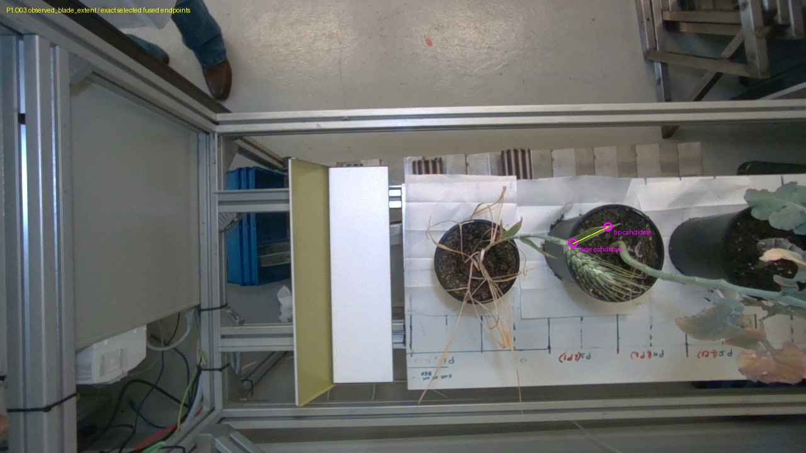
Frame 143152; exact selected original fused points projected with final ICP pose.
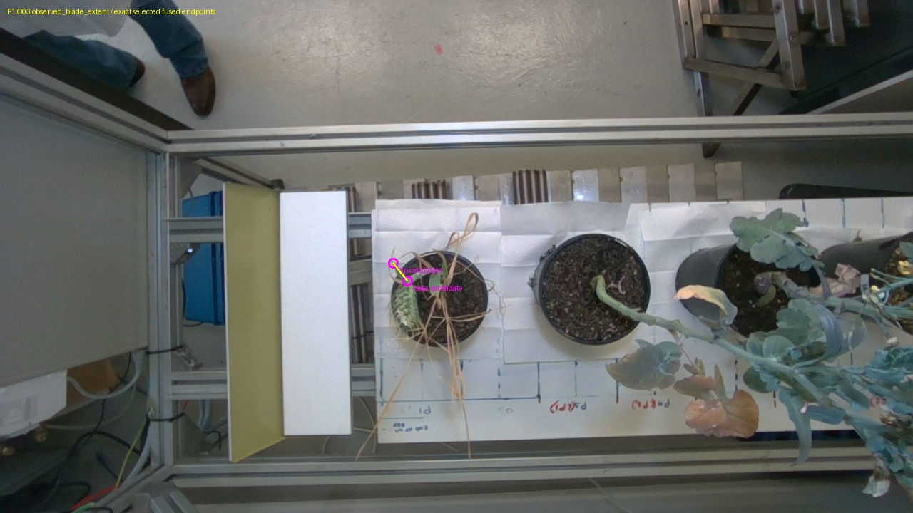
Frame 302754; exact selected original fused points projected with final ICP pose.
P1.O03.true_tip_attempt — endpoint evidence
No homologous whole-organ comparison: True dry terminal tip is selected from the source silhouette; no farther nearest point is substituted if this disk lacks reconstructed support.
True dry terminal tip is selected from the source silhouette; no farther nearest point is substituted if this disk lacks reconstructed support.
P1.O04.ear_body_chord — endpoint evidence
No homologous whole-organ comparison: Body-to-awn transition is a source-visible candidate; exact distal glume boundary has pixel-scale ambiguity. This is an ear, never a leaf.
Body-to-awn transition is a source-visible candidate; exact distal glume boundary has pixel-scale ambiguity. This is an ear, never a leaf.
Basal small-lobe/petiole convention remains tentative. The operator length is not independently photo-readable; this explicitly conditional comparison does not establish the measurement definition or physical accuracy.
Magnified source review located the lowest visible basal lamina at [594,424] and apex at [590,326]. Initial interior clicks [594,416] and [590,331] were rejected as inside the blade. Endpoints were set by source anatomy, without moving geometry or targeting a reference value.
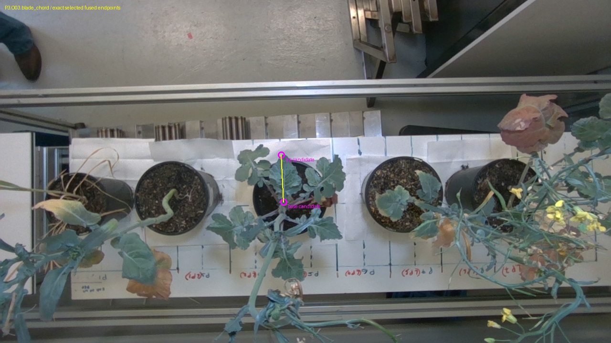
Frame 824869; exact selected original fused points projected with final ICP pose.
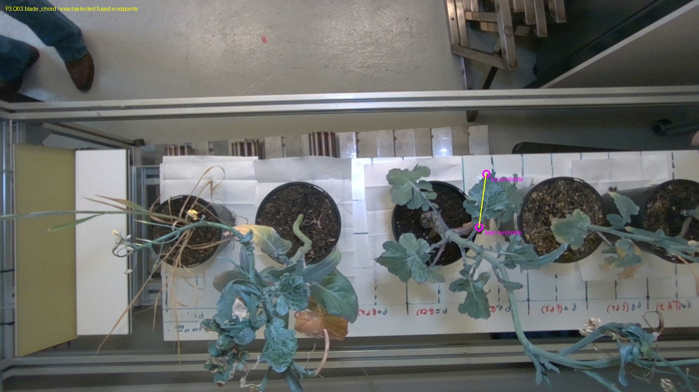
Frame 618150; exact selected original fused points projected with final ICP pose.
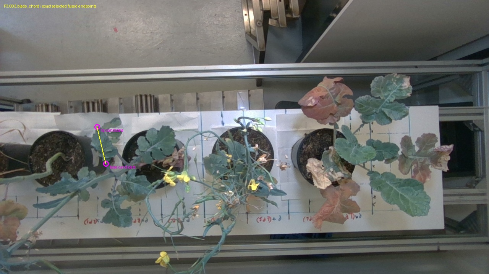
Frame 1055904; exact selected original fused points projected with final ICP pose.
P5.O04.terminal_lamina_chord — endpoint evidence
No homologous whole-organ comparison: Ruler image includes basal lobes down toward a small low lobe at its zero. This raw terminal-lamina origin cannot be substituted for that ruler origin; no residual is meaningful.
Ruler image includes basal lobes down toward a small low lobe at its zero. This raw terminal-lamina origin cannot be substituted for that ruler origin; no residual is meaningful.
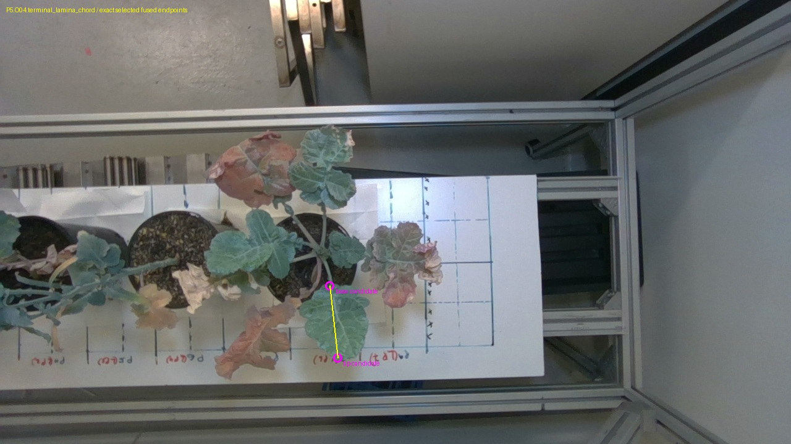
Frame 1445026; exact selected original fused points projected with final ICP pose.
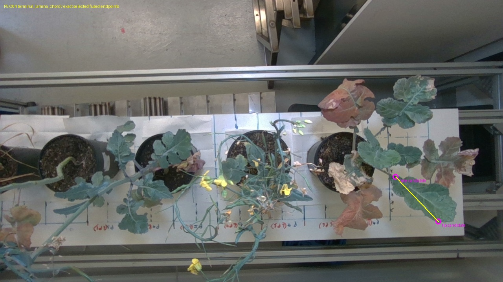
Frame 1030829; exact selected original fused points projected with final ICP pose.
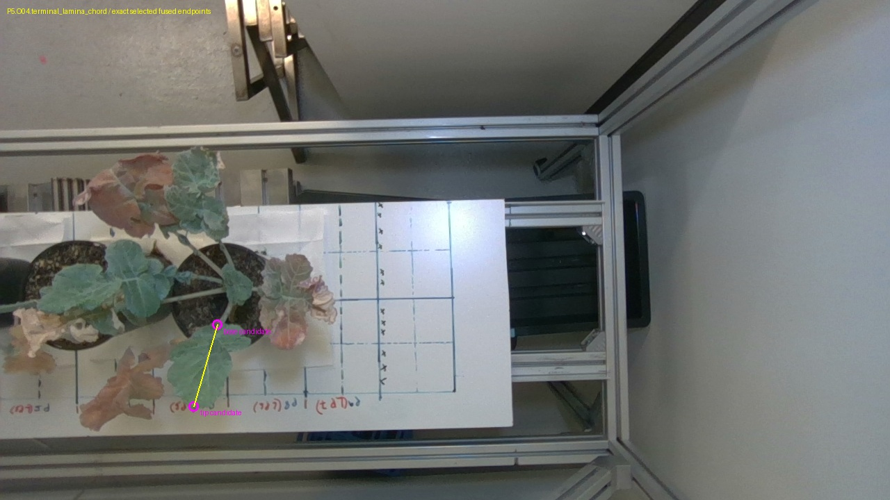
Frame 1639585; exact selected original fused points projected with final ICP pose.
P1 — source identity supported
Single cereal stem and ear, three green blade nodes and a ring of dry basal blades; first pot beside the board.
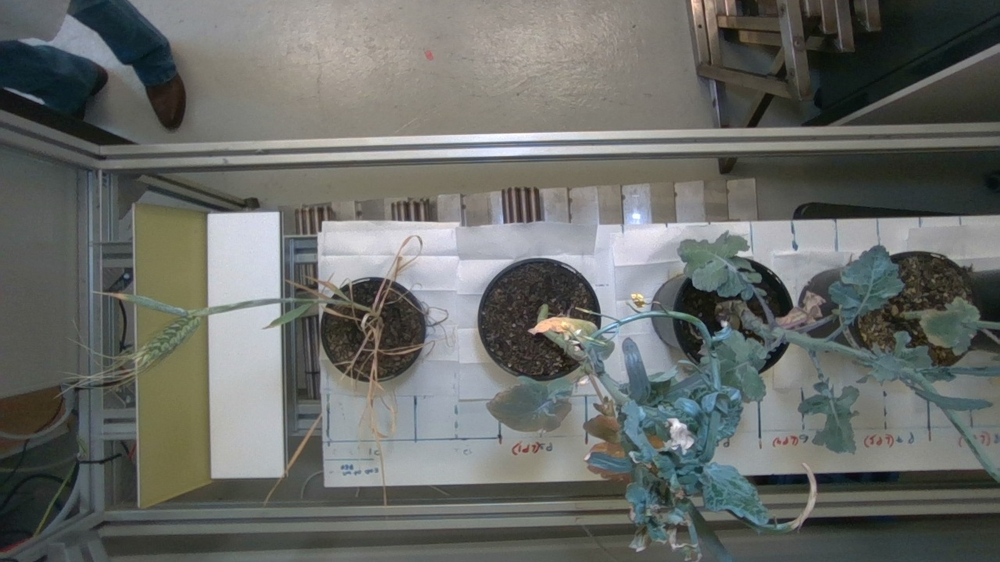
Raw D405 source frame 459309.Cyan: supported organ interior regions. Orange: candidate/unresolved regions. Magenta: highest observed surface. Regions do not define complete organ boundaries.
Source manual overview · click for preserved original
Height excluded: Dry blades overlap narrow stems at the soil junction; the measured stem origin cannot be isolated. Highest retained surface projects to the upper green blade tip. Cereal ear awns extend beyond the dense ear body and are incompletely reconstructed; the very highest biological tip is not certified.
Observed canopy descriptors
Points
Multi-view core
X span
Y span
Observed Z span — not height
XY hull — not leaf area
21,891
12,089
17.02 cm*
33.06 cm*
46.73 cm*
346.8 cm²*
*Conditional conversion of existing metre coordinates. Physical dimensions and recording units are unavailable. Z is the display normal; cleanup basal exclusions mean its span cannot replace stem-base-to-tip height.
Upper narrow green blade attaches beside the sole cereal ear; relative attachment and pointed form match the overview.
Annotated overview to raw D405 scene; ruler-folder correspondence remains the prior review candidate and is not independently approved.
The true fine dry tip has zero supported cleaned points inside a 4px source disk at frame143152 [983,354]. The measured 5.643 cm chord ends inside the blade and is only partial observed extent.
The sole cereal ear is distinctive; ear body and awns remain different endpoint definitions.
Annotated overview to raw D405 scene; ruler-folder correspondence remains the prior review candidate and is not independently approved.
The distal ear-body endpoint has zero supported cleaned points in the 4px source disk at frame459309 [157,469]. No farther nearest point is substituted. Ear body and awns also need a shared boundary rule.
P1.O04.width — annotation 1.6 cm; photo not independently readable · click for preserved original
Every manual dimension and its disposition
ID
Annotation cm
Photo interval cm
Disposition
P1.H01.height
53.5
None
Dry blades overlap narrow stems at the soil junction; the measured stem origin cannot be isolated. Highest retained surface projects to the upper green blade tip. Cereal ear awns extend beyond the dense ear body and are incompletely reconstructed; the very highest biological tip is not certified.
P1.O01.length
12.5
None
Organ identity unresolved or tentative; no nearest-shape or dimension-based assignment.
P1.O01.width
1
[0.9, 1.3]
Organ identity unresolved or tentative; no nearest-shape or dimension-based assignment. Photographed section is not demonstrated to be maximum width.
P1.O02.length
10.9
[10.6, 11.2]
Organ identity unresolved or tentative; no nearest-shape or dimension-based assignment.
P1.O02.width
1
[0.8, 1.2]
Organ identity unresolved or tentative; no nearest-shape or dimension-based assignment. Photographed section is not demonstrated to be maximum width.
P1.O03.length
7.3
[7.0, 7.6]
The true fine dry tip has zero supported cleaned points inside a 4px source disk at frame143152 [983,354]. The measured 5.643 cm chord ends inside the blade and is only partial observed extent.
P1.O03.width
9
[0.6, 1.0]
The true fine dry tip has zero supported cleaned points inside a 4px source disk at frame143152 [983,354]. The measured 5.643 cm chord ends inside the blade and is only partial observed extent. Exact ruler cross-section correspondence is not established; no maximum-width claim.
P1.O04.length
6.5
[6.1, 6.7]
The distal ear-body endpoint has zero supported cleaned points in the 4px source disk at frame459309 [157,469]. No farther nearest point is substituted. Ear body and awns also need a shared boundary rule.
P1.O04.width
1.6
None
The distal ear-body endpoint has zero supported cleaned points in the 4px source disk at frame459309 [157,469]. No farther nearest point is substituted. Ear body and awns also need a shared boundary rule. Exact ruler cross-section correspondence is not established; no maximum-width claim.
P2 — source identity supported
Bent exposed basal stem, compact puckered blue-green crown, dry curled tips and hanging flowering branch; between cereal and P3.
Raw D405 source frame 459309.Cyan: supported organ interior regions. Orange: candidate/unresolved regions. Magenta: highest observed surface. Regions do not define complete organ boundaries.
Source manual overview · click for preserved original
Height excluded: Exposed curved green basal stem is visible against soil, but its precise emergence and measurement zero are unresolved. Highest retained points project to a curled yellowing edge and nearby overlapping tissue. Small terminal buds and curled margins are not a unique certified top endpoint.
Observed canopy descriptors
Points
Multi-view core
X span
Y span
Observed Z span — not height
XY hull — not leaf area
74,306
50,252
33.13 cm*
19.03 cm*
49.84 cm*
357.9 cm²*
*Conditional conversion of existing metre coordinates. Physical dimensions and recording units are unavailable. Z is the display normal; cleanup basal exclusions mean its span cannot replace stem-base-to-tip height.
P2.O01 · candidate medium · 1,193 interior review points
Puckered blade beside the curled dry margin is plausible after reversing overview orientation; overlapping crown prevents a unique blade-base trace.
Annotated overview to raw D405 scene; ruler-folder correspondence remains the prior review candidate and is not independently approved.
Organ identity unresolved or tentative; no nearest-shape or dimension-based assignment.
P2.O02.width — annotation 3.4 cm; photo 3.5 · click for preserved original
Every manual dimension and its disposition
ID
Annotation cm
Photo interval cm
Disposition
P2.H01.height
51.7
None
Exposed curved green basal stem is visible against soil, but its precise emergence and measurement zero are unresolved. Highest retained points project to a curled yellowing edge and nearby overlapping tissue. Small terminal buds and curled margins are not a unique certified top endpoint.
P2.O01.length
5
None
Organ identity unresolved or tentative; no nearest-shape or dimension-based assignment.
P2.O01.width
2.7
None
Organ identity unresolved or tentative; no nearest-shape or dimension-based assignment. Photographed section is not demonstrated to be maximum width.
P2.O02.length
3.9
[3.6, 4.2]
Organ identity unresolved or tentative; no nearest-shape or dimension-based assignment.
P2.O02.width
3.4
[3.2, 3.8]
Organ identity unresolved or tentative; no nearest-shape or dimension-based assignment. Photographed section is not demonstrated to be maximum width.
P3 — source identity supported
Six broad lobed leaves around a purple petiole junction and a long arcing flowering stalk; between compact P2 and sparse P4.
Raw D405 source frame 824869.Cyan: supported organ interior regions. Orange: candidate/unresolved regions. Magenta: highest observed surface. Regions do not define complete organ boundaries.
Source manual overview · click for preserved original
Height excluded: Purple/green petiole junction is visible, but the soil-level stem origin is beneath overlapping tissue. Branch-junction region only. Highest retained points lie in overlapping distal stalk/leaf tissue near the lower image edge. Long flowering-stem extremities and true terminal point are not fully resolved.
Observed canopy descriptors
Points
Multi-view core
X span
Y span
Observed Z span — not height
XY hull — not leaf area
113,901
85,055
24.81 cm*
24.13 cm*
49.00 cm*
451.8 cm²*
*Conditional conversion of existing metre coordinates. Physical dimensions and recording units are unavailable. Z is the display normal; cleanup basal exclusions mean its span cannot replace stem-base-to-tip height.
Narrow lateral lobed blade at raw-image right matches overview left-middle leaf after 180-degree orientation reversal.
Annotated overview to raw D405 scene; ruler-folder correspondence remains the prior review candidate and is not independently approved.
The lateral blade attachment is crossed by neighbouring petiole/stalk tissue. Its complete basal boundary and lobed width section have not been frozen; the saved pool is interior tissue.
Central oval terminal blade with small basal lobes and serrated edge matches overview bottom-centre leaf; neighbouring petiole topology agrees.
Annotated overview to raw D405 scene; ruler-folder correspondence remains the prior review candidate and is not independently approved.
One provisional source-endpoint chord is available separately. The operator reference is not independently photo-readable and basal-lobe/petiole convention remains tentative.
P3.O06.width — annotation 6.3 cm; photo not independently readable · click for preserved original
Every manual dimension and its disposition
ID
Annotation cm
Photo interval cm
Disposition
P3.H01.height
52.8
None
Purple/green petiole junction is visible, but the soil-level stem origin is beneath overlapping tissue. Branch-junction region only. Highest retained points lie in overlapping distal stalk/leaf tissue near the lower image edge. Long flowering-stem extremities and true terminal point are not fully resolved.
P3.O01.length
7.4
None
The lateral blade attachment is crossed by neighbouring petiole/stalk tissue. Its complete basal boundary and lobed width section have not been frozen; the saved pool is interior tissue.
P3.O01.width
5.5
[5.1, 5.7]
The lateral blade attachment is crossed by neighbouring petiole/stalk tissue. Its complete basal boundary and lobed width section have not been frozen; the saved pool is interior tissue. Exact ruler cross-section correspondence is not established; no maximum-width claim.
P3.O02.length
9.8
None
Basal lobes and hole boundaries overlap a dry underlying blade; complete blade origin and the same ruler section are not frozen in 3D.
P3.O02.width
7.6
None
Basal lobes and hole boundaries overlap a dry underlying blade; complete blade origin and the same ruler section are not frozen in 3D. Exact ruler cross-section correspondence is not established; no maximum-width claim.
P3.O03.length
7.5
None
Provisional chord arithmetic is available, but the operator 7.5 cm is not independently photo-readable, basal-lobe/petiole convention is tentative, and physical scale is unconfirmed. Excluded from validated accuracy statistics.
P3.O03.width
5.7
None
One provisional source-endpoint chord is available separately. The operator reference is not independently photo-readable and basal-lobe/petiole convention remains tentative. Exact ruler cross-section correspondence is not established; no maximum-width claim.
P3.O04.length
11
[10.7, 11.3]
The petiole-to-lobed-blade origin and complete lobe contour have not been frozen across source views. The interior pool omits terminal margins.
P3.O04.width
8.7
[8.4, 9.0]
The petiole-to-lobed-blade origin and complete lobe contour have not been frozen across source views. The interior pool omits terminal margins. Exact ruler cross-section correspondence is not established; no maximum-width claim.
P3.O05.length
9.2
[8.9, 9.5]
The lobed blade attachment is next to a crossing stalk; a complete blade origin and photographed width-section edges are not yet isolated in 3D.
P3.O05.width
7.7
[7.4, 8.0]
The lobed blade attachment is next to a crossing stalk; a complete blade origin and photographed width-section edges are not yet isolated in 3D. Exact ruler cross-section correspondence is not established; no maximum-width claim.
P3.O06.length
7.5
None
Organ identity unresolved or tentative; no nearest-shape or dimension-based assignment.
P3.O06.width
6.3
None
Organ identity unresolved or tentative; no nearest-shape or dimension-based assignment. Photographed section is not demonstrated to be maximum width.
P4 — source identity supported
Sparse branched flowering plant with yellow flowers and narrow pod-like structures; adjacent to P3 and red-brown P5.
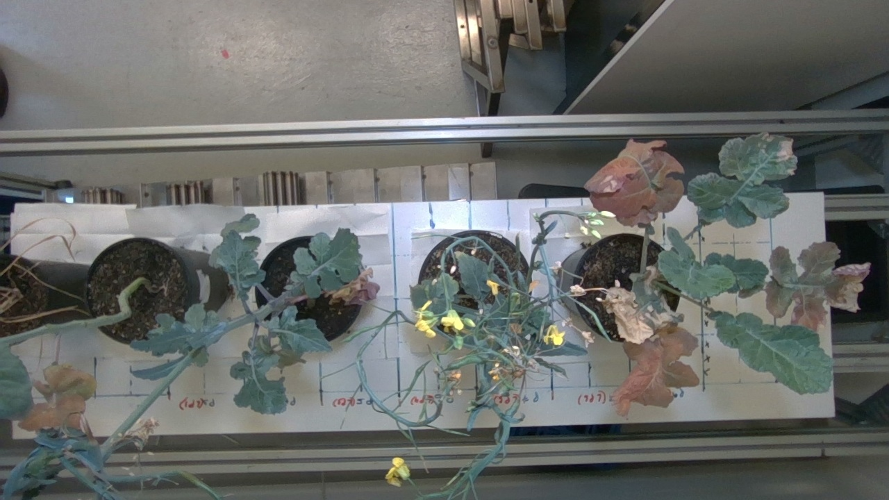
Raw D405 source frame 1003470.
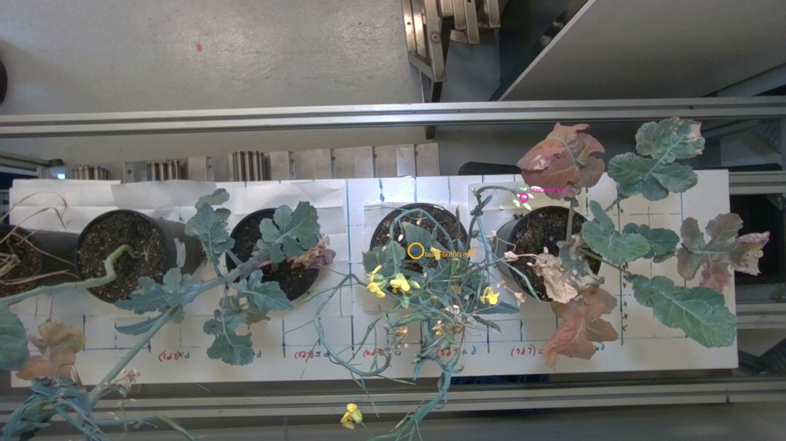
Cyan: supported organ interior regions. Orange: candidate/unresolved regions. Magenta: highest observed surface. Regions do not define complete organ boundaries.
Source manual overview · click for preserved original
Height excluded: Pot-centre origin is obscured by leaves and crossing flowering stems. Region candidate only; no visible stem-base endpoint. Highest retained surface projects to a terminal pale bud/flower cluster, but its exact outermost endpoint and complete depth support remain uncertain.
Observed canopy descriptors
Points
Multi-view core
X span
Y span
Observed Z span — not height
XY hull — not leaf area
69,634
41,137
17.46 cm*
17.15 cm*
43.55 cm*
222.6 cm²*
*Conditional conversion of existing metre coordinates. Physical dimensions and recording units are unavailable. Z is the display normal; cleanup basal exclusions mean its span cannot replace stem-base-to-tip height.
Overview arrows and similar pod-like organs are interleaved. Organ type and branch-to-organ correspondence remain unresolved; broad review region only.
Annotated overview to raw D405 scene; ruler-folder correspondence remains the prior review candidate and is not independently approved.
Organ identity unresolved or tentative; no nearest-shape or dimension-based assignment.
P4.O04.width — annotation 0.4 cm; photo not independently readable · click for preserved original
Every manual dimension and its disposition
ID
Annotation cm
Photo interval cm
Disposition
P4.H01.height
52.3
None
Pot-centre origin is obscured by leaves and crossing flowering stems. Region candidate only; no visible stem-base endpoint. Highest retained surface projects to a terminal pale bud/flower cluster, but its exact outermost endpoint and complete depth support remain uncertain.
P4.O01.length
3
None
Organ identity unresolved or tentative; no nearest-shape or dimension-based assignment. Leaf-versus-pod identity unresolved.
P4.O01.width
0.2
None
Organ identity unresolved or tentative; no nearest-shape or dimension-based assignment. Leaf-versus-pod identity unresolved. Photographed section is not demonstrated to be maximum width.
P4.O02.length
2.8
None
Organ identity unresolved or tentative; no nearest-shape or dimension-based assignment. Leaf-versus-pod identity unresolved.
P4.O02.width
0.5
None
Organ identity unresolved or tentative; no nearest-shape or dimension-based assignment. Leaf-versus-pod identity unresolved. Photographed section is not demonstrated to be maximum width.
P4.O03.length
2.9
None
Organ identity unresolved or tentative; no nearest-shape or dimension-based assignment. Leaf-versus-pod identity unresolved.
P4.O03.width
0.3
None
Organ identity unresolved or tentative; no nearest-shape or dimension-based assignment. Leaf-versus-pod identity unresolved. Photographed section is not demonstrated to be maximum width.
P4.O04.length
2.9
None
Organ identity unresolved or tentative; no nearest-shape or dimension-based assignment. Leaf-versus-pod identity unresolved.
P4.O04.width
0.4
None
Organ identity unresolved or tentative; no nearest-shape or dimension-based assignment. Leaf-versus-pod identity unresolved. Photographed section is not demonstrated to be maximum width.
P5 — source identity supported
Broad green leaves interspersed with distinctive rust-brown damaged lobed blades, small central leaf and radial petioles; last pot.
Raw D405 source frame 1445026.
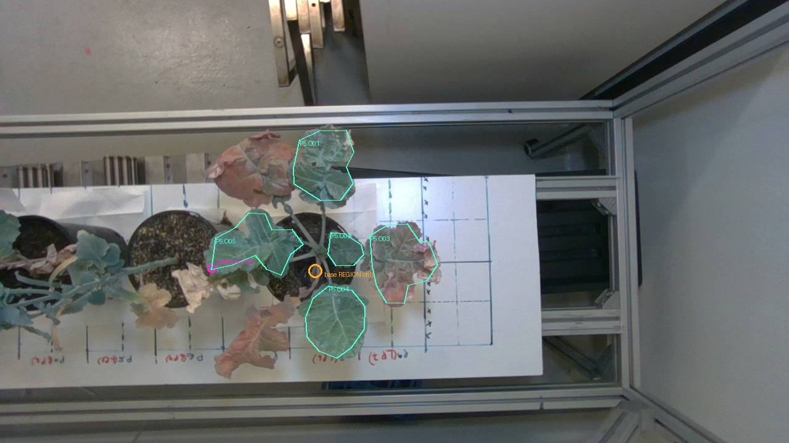
Cyan: supported organ interior regions. Orange: candidate/unresolved regions. Magenta: highest observed surface. Regions do not define complete organ boundaries.
Source manual overview · click for preserved original
Height excluded: Radial petiole junction and lower curved stem are visible; actual soil-emergence point is hidden by the stem/leaf cluster. Highest retained points project to the terminal margin of the left-facing lobed green O05 leaf candidate, a plausible top surface. This does not establish all-terminal completeness or the stem origin.
Observed canopy descriptors
Points
Multi-view core
X span
Y span
Observed Z span — not height
XY hull — not leaf area
156,185
121,810
33.32 cm*
35.23 cm*
24.39 cm*
847.5 cm²*
*Conditional conversion of existing metre coordinates. Physical dimensions and recording units are unavailable. Z is the display normal; cleanup basal exclusions mean its span cannot replace stem-base-to-tip height.
Green lobed blade with pale/brown damaged upper margin matches overview left-side leaf after rotating row orientation.
Annotated overview to raw D405 scene; ruler-folder correspondence remains the prior review candidate and is not independently approved.
The blade has curled damaged/necrotic margins; the rule for including folded dry tissue and full basal boundary is not frozen. Source ruler length was not independently readable.
Rust-brown deeply lobed blade with rolled pale right edge matches distinctive source top-centre damaged leaf and radial attachment.
Annotated overview to raw D405 scene; ruler-folder correspondence remains the prior review candidate and is not independently approved.
The rust-brown blade has rolled papery margins and lobes that change pose in the held ruler photo. Complete homologous tip/base and section edges are not frozen.
P5.O03.length — annotation 11.9 cm; photo not independently readable · click for preserved originalP5.O03.width — annotation 11.7 cm; photo 11.7 · click for preserved original
Broad green terminal blade with shallow basal side lobes and reticulate veins matches overview right-side leaf and same petiole.
Annotated overview to raw D405 scene; ruler-folder correspondence remains the prior review candidate and is not independently approved.
A 12.149 cm terminal-lamina chord is available, but the ruler includes basal lobes toward a lower zero. The raw terminal-lamina origin is not homologous to that ruler origin; no residual is computed.
P5.O04.length — annotation 12.9 cm; photo 12.9 · click for preserved originalP5.O04.width — annotation 9 cm; photo 9.0 · click for preserved original
Left-facing green blade with elongated central lobe and basal side lobes matches overview bottom-left leaf and attachment.
Annotated overview to raw D405 scene; ruler-folder correspondence remains the prior review candidate and is not independently approved.
The ruler length base-versus-petiole inclusion is unresolved, and the in-situ leaf is lobed/curved. The full homologous origin and photographed width section are not frozen.
P5.O05.length — annotation 13.2 cm; photo not independently readable · click for preserved originalP5.O05.width — annotation 7.8 cm; photo 7.6 · click for preserved original
Every manual dimension and its disposition
ID
Annotation cm
Photo interval cm
Disposition
P5.H01.height
31.8
None
Radial petiole junction and lower curved stem are visible; actual soil-emergence point is hidden by the stem/leaf cluster. Highest retained points project to the terminal margin of the left-facing lobed green O05 leaf candidate, a plausible top surface. This does not establish all-terminal completeness or the stem origin.
P5.O01.length
12
None
The blade has curled damaged/necrotic margins; the rule for including folded dry tissue and full basal boundary is not frozen. Source ruler length was not independently readable.
P5.O01.width
9.9
[9.4, 10.2]
The blade has curled damaged/necrotic margins; the rule for including folded dry tissue and full basal boundary is not frozen. Source ruler length was not independently readable. Exact ruler cross-section correspondence is not established; no maximum-width claim.
P5.O02.length
8
None
The small central blade base is adjacent to the crowded petiole fork; its exact lamina origin and obscured ruler endpoints are unresolved.
P5.O02.width
4.8
None
The small central blade base is adjacent to the crowded petiole fork; its exact lamina origin and obscured ruler endpoints are unresolved. Exact ruler cross-section correspondence is not established; no maximum-width claim.
P5.O03.length
11.9
None
The rust-brown blade has rolled papery margins and lobes that change pose in the held ruler photo. Complete homologous tip/base and section edges are not frozen.
P5.O03.width
11.7
[11.2, 12.2]
The rust-brown blade has rolled papery margins and lobes that change pose in the held ruler photo. Complete homologous tip/base and section edges are not frozen. Exact ruler cross-section correspondence is not established; no maximum-width claim.
P5.O04.length
12.9
[12.6, 13.2]
A 12.149 cm terminal-lamina chord is available, but the ruler includes basal lobes toward a lower zero. The raw terminal-lamina origin is not homologous to that ruler origin; no residual is computed.
P5.O04.width
9
[8.7, 9.3]
A 12.149 cm terminal-lamina chord is available, but the ruler includes basal lobes toward a lower zero. The raw terminal-lamina origin is not homologous to that ruler origin; no residual is computed. Exact ruler cross-section correspondence is not established; no maximum-width claim.
P5.O05.length
13.2
None
The ruler length base-versus-petiole inclusion is unresolved, and the in-situ leaf is lobed/curved. The full homologous origin and photographed width section are not frozen.
P5.O05.width
7.8
[7.2, 8.0]
The ruler length base-versus-petiole inclusion is unresolved, and the in-situ leaf is lobed/curved. The full homologous origin and photographed width section are not frozen. Exact ruler cross-section correspondence is not established; no maximum-width claim.
Definitions and exclusions
Observed descriptors use unchanged source-reviewed cleanup subsets. Full and 1–99% axis spans describe those points, not complete plants. Convex hull area encloses empty spaces; occupied-cell area varies with grid resolution and sampling. Neither is total leaf area. The CSV includes 1, 2 and 5 mm grid results and a multi-view-core hull sensitivity result.
Candidate base regions use the original fused cloud, including uncertain/context points, with raw-image evidence and exact final ICP poses. Cleanup soil-seed offsets are never measured stem origins. Highest observed surfaces are projected to three source views per plant, separately from a biological very-tip claim.
All 47 dimensions retain original annotations and prior ruler-review status. Supported image identity does not establish complete homologous 3D boundaries, held-flat endpoint conventions, or the photographed width section. P1 ear is excluded from leaf statistics; P4 leaf-versus-pod identity remains unresolved. No nearest-dimension matching or synthetic completion was performed.
Source SHA256 hashes, camera-transform source, projection policy, exclusions, and original-index provenance are in the JSON and NPZ. Candidate labels are assistant review, not independent operator confirmation.